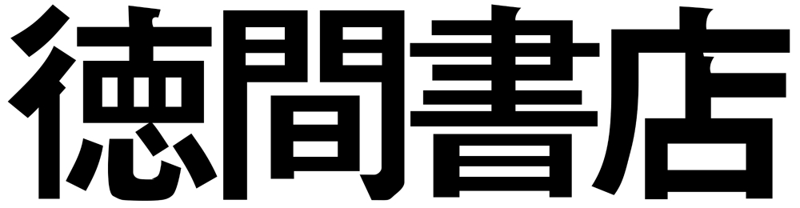

Hayao Miyazaki got the name Ghibli from an Italian plane used to scout the Sahara Desert. Ghibli is derived from a Libyan word which means hot desert wind. Although the italian prunciation of Ghibli is with a hard /g/, the japanese pronunciation Miyazaki used is with a soft /g/. Miyazaki's love for aircrafts made him choose this name (Pradhan, Aaheli, 2025).

Tokuma Shoten
Tokuma Shoten is a publishing company that Studio Ghibli was under until 2005. The first Studio Ghibli film, Nasuicaa of the Valley of the Wind, was published under Tokuma Shoten in 1984. This movie led to the creation of Studio Ghibli by Hayao Miyazaki and Isao Takahata (Tokuma Shoten, 2026).
Image by Natasha Baucas via Wikipedia Commons (CC BY 2.0)
Studio Ghibli Awards
Below shows a couple of the many Studio Ghibli films which have been given awards through the years.
Spirited Away won the Oscar for Best Animated Feature in 2003.
The Boy and the Heron won the Oscar for Best Animated Film in 2024
Princess Mononoke won the Japan Academy Prize for Picture of the Year in 1998